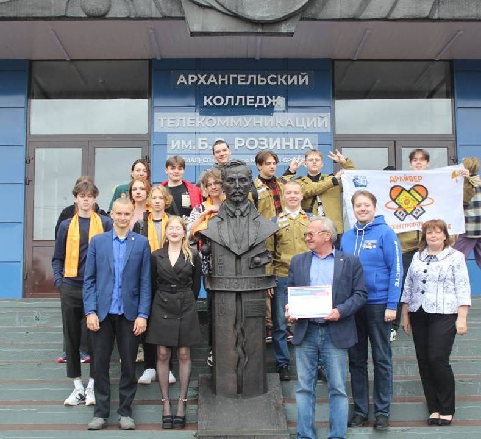
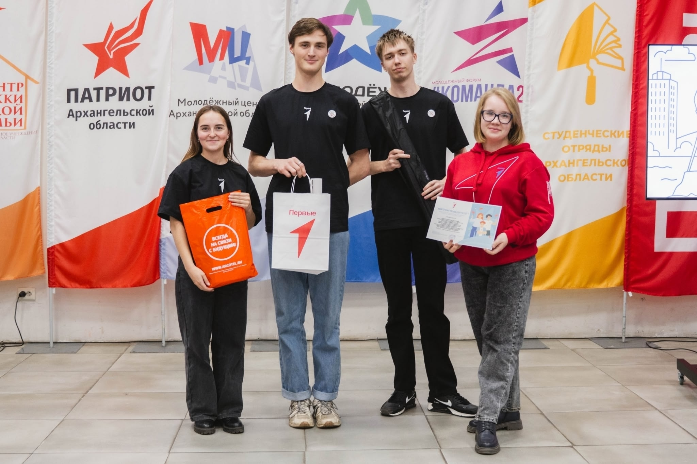
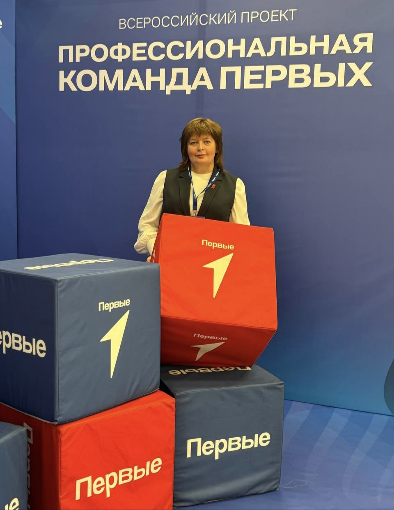

Движение Первых
Для участников-обучающихся Движения Первых вступление в Первичное отделение предоставляет возможность объединяться в группы по интересам и вместе с единомышленниками реализовывать социально значимые инициативы
0
Участников в первичке

9 июня 2023 года в АКТ(ф)СПбГУТ появилось первичное отделения Движения Первых
Новые возможности для студентов!

Первые на связи! - Победители второго сезона Конкурса Первичных отделений 2025
Развиваем сообщество вместе!

Фестиваль Первые на связи! г.Санкт-Петербург (Гранты Движения Первых)
Строим безопасное цифровое будущее России!
Погорелова Елена
Председатель первичного отделения

Нестерова Елена Сергеевна
Куратор первичного отделения